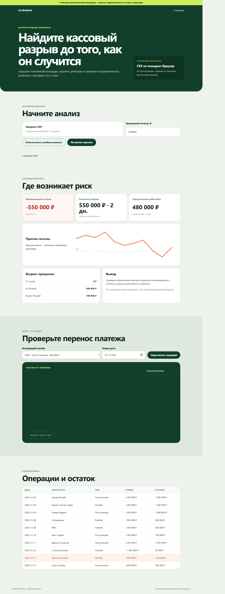
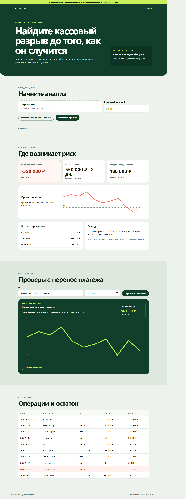

CSV обрабатывается только в браузере и не передаётся на сервер.
Задача
Увидеть риск заранее
Финансовому менеджеру нужно проверить, хватит ли денег на запланированные выплаты, где возникнет отрицательный остаток и какое действие стоит обсудить до даты платежа.
Моя рольАналитика, логика расчёта, интерфейс, тестирование и публикация
Проект создан с нуля как самостоятельный учебный продукт.
Решение
От CSV до управленческого сценария
Прогноз остатка, кассовый разрыв, aging и концентрация дебиторки.
Перенос платежа немедленно пересчитывает минимальный остаток.
Отчёт Markdown фиксирует исходный риск, решение и измеримый эффект.
До
Разрыв −550 000 ₽
Платёжный календарь уходит в минус 13 декабря. Просроченная дебиторка — 480 000 ₽, крупнейший должник формирует 62,5% суммы.


После
Минимум +50 000 ₽
Перенос выплаты P005 с 13 на 16 декабря устраняет отрицательный остаток. Улучшение минимального остатка — 600 000 ₽.


Проверка
Результат воспроизводится
Контрольный CSV входит в репозиторий. Автотесты проверяют шесть групп требований: импорт, прогноз, дебиторку, концентрацию, сценарий и ошибки данных. Интерфейс проверен на desktop и mobile.
Для заказчика
Готов разработать похожий аналитический инструмент
Например: платёжный календарь, контроль дебиторки, план-факт бюджета или управленческий дашборд из CSV/Excel с согласованными формулами и тестовым сценарием.